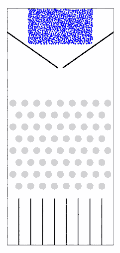
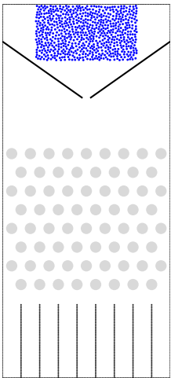
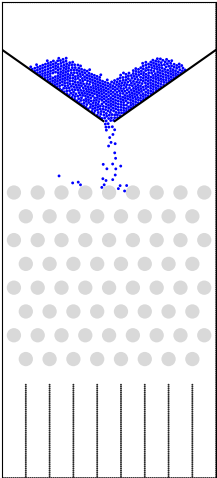
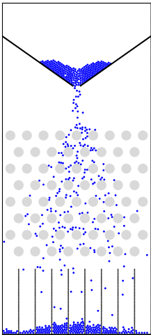
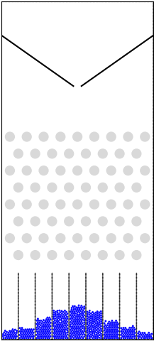

脚本及数据下载：
钉子坐标：init_xyr.dat
VBOX脚本：normal_distribution.py
这是一个基于离散元数值模拟完成的正态分布钉板实验。
如下图中，每一个灰点表示一颗钉子，它们彼此的距离均相等，上一层的每一颗的水平位置恰好位于下一层的两颗正中间。在钉子区域上方生成一定数量的直径小于两颗钉子之间距离的小球，在入口处向下降落。小球在钉板区域向下传播，直到落在底板内为止。许许多多同样大小的小球不断从入口处下落，只要球的数目相当大，它们在底板将堆成近似于正态的密度函数图形（即：中间高，两头低，呈左右对称的古钟型）。
动态图

静态过程
 |
 |
 |
 |
VBOX脚本源码 normal_distribution.py
######################################
# title:正态分布钉板实验
# date:2021-02-26
# authors:钟军 李长圣
# E-mail:sheng0619@163.com
# more info, see www.geovbox.com
#######################################
#程序初始化
LOAD init_xyr.dat
PROP GROUP _ball
PROP COLOR lg RANGE GROUP _ball
#颗粒设为球，计算颗粒体积用4/3*pi*r^3计算
SET disk off
#设置研究范围
BOX left 0.0 right 11000.0 bottom 0.0 height 21000.0 kn=0e10 ks=0e10 fric 0.00
#设置挡板墙，这里模型采用hertz接触模型，挡板墙的kn ks无效，计算时取颗粒的参数
WALL ID 0, NODES ( 1000.0 , 19000.0 ) ( 5260.0 , 16000.0 ), kn=0e10 ks=0e10 fric 0.3 COLOR black
WALL ID 1, NODES ( 5740.0 , 16000.0 ) ( 10000.0, 19000.0 ), kn=0e10 ks=0e10 fric 0.3 COLOR black
#限制运动
FIX x y spin RANGE group _ball
#底部挡板钉
GLINE RAD=40 P1 ( 1000.0 1000.0 ) P2 ( 10000.0 1000.0 ), color=black GROUP=bom
GLINE RAD=40 P1 ( 1000.0 1000.0 ) P2 ( 1000.0 21000.0 ), color=black GROUP=bom
GLINE RAD=40 P1 ( 2000.0 1000.0 ) P2 ( 2000.0 5000.0 ), color=black GROUP=bom
GLINE RAD=40 P1 ( 3000.0 1000.0 ) P2 ( 3000.0 5000.0 ), color=black GROUP=bom
GLINE RAD=40 P1 ( 4000.0 1000.0 ) P2 ( 4000.0 5000.0 ), color=black GROUP=bom
GLINE RAD=40 P1 ( 5000.0 1000.0 ) P2 ( 5000.0 5000.0 ), color=black GROUP=bom
GLINE RAD=40 P1 ( 6000.0 1000.0 ) P2 ( 6000.0 5000.0 ), color=black GROUP=bom
GLINE RAD=40 P1 ( 7000.0 1000.0 ) P2 ( 7000.0 5000.0 ), color=black GROUP=bom
GLINE RAD=40 P1 ( 8000.0 1000.0 ) P2 ( 8000.0 5000.0 ), color=black GROUP=bom
GLINE RAD=40 P1 ( 9000.0 1000.0 ) P2 ( 9000.0 5000.0 ), color=black GROUP=bom
GLINE RAD=40 P1 ( 10000.0 1000.0 ) P2 ( 10000.0 21000.0 ), color=black GROUP=bom
GLINE RAD=40 P1 ( 1000.0 21000.0 ) P2 ( 10000.0 21000.0 ), color=black GROUP=bom
FIX x y spin RANGE group bom
#在矩形范围内生成颗粒
GEN NUM 35000 rad discrete 60.0 60.0, x (2800.0, 8200.0), y ( 18000.0, 21000.0), COLOR blue GROUP _ball
PROP density 2.5e3, fric 0.3, shear 2.9e9, poiss 0.2, damp 0.4, hertz
#设置时间步及重力加速度
SET DT 5e-2, GRAVITY 0.0, -9.8
#设置每1000步保存一次vtk格式的计算结果
SET vtk 300
#设置每1000步保存一次ps格式的计算结果
SET ps 300
#设置每1000步保存一次dat格式的计算结果
SET print 300
#计算5000步
CYC 25000
#停止
STOP